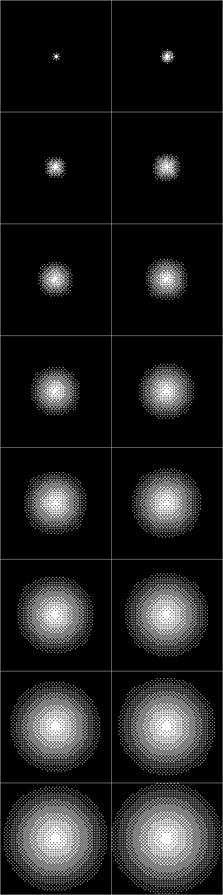
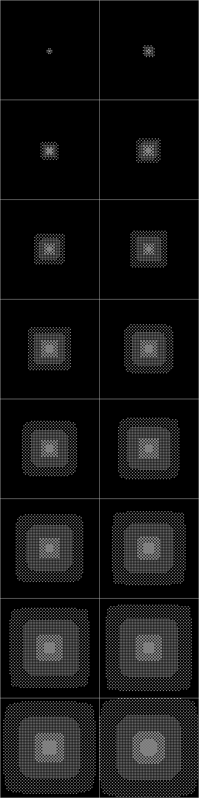

The Shape of the Air Brush
 Normal
Normal
It shape is true circle. The frequency of occured dots is gradually increase, as a center of region is maximum(100%).
The normal pattern of air brush illustrate below.

 Half
Half
It shape is similar oval. The frequency of occured dots is gradually increase, as a center of region is maximum(50%).
形状は正方形に近い丸みを帯びたもので、中心に向かって点の頻度が５０％となるパターンを用います。
The half pattern of air brush illustrate below.
